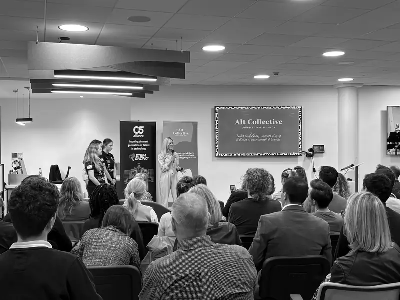

TEKEX Female Founders event sparks powerful community support for next generation of innovators

An inspiring moment of generosity and connection emerged during the recent TEKEX #35 Female Founders event, demonstrating the strength of the Channel Islands’ growing innovation ecosystem and the power of bringing the right people together in the same room.
The evening was supported by partners including Rathbones Investment Management International, BDO Group and C5 Alliance. Founders, investors and leaders from across Jersey, Guernsey and the UK came together to celebrate female entrepreneurship and the growing impact of women-led innovation across the islands.
One of the most memorable moments came when three students from Beaulieu School took to the stage to share their journey as part of the C5-sponsored STEM Racing Programme, led locally by Digital Jersey. The team spoke passionately about the experience of designing and building their own model race car, explaining their opportunity to represent the islands at the upcoming national finals.
However, like many young teams competing in the competition, they faced the challenge of raising the funding needed to make the trip possible.
What happened next captured the true spirit of the TEKEX community.
Shortly after their five-minute presentation, a TEKEX investor attending the event anonymously reached out to say they would fund the entire amount required for the team to compete at the national finals.
The moment was met with huge enthusiasm in the room and perfectly illustrated what TEKEX aims to do: connect ambition, opportunity and support community in ways that create real-world outcomes.
The opportunity for the students to take the stage was made possible through the collaborative efforts of Digital Jersey, C5 Alliance and the TEKEX Female Founders series, with the evening itself supported by previously mentioned sponsors. Together, these organisations helped create a platform where emerging talent could be seen and supported by the wider business and investment community.
The students were also supported on the night by Sophie Clyde-Smith of Alt Collective, who helped spotlight the team’s presentation and encouraged attendees to connect with and support the students following their pitch. This reflected the collaborative spirit of the evening and the wider commitment to supporting emerging young talent. (The photo shared from the evening features Sophie with the STEM team.)
Adding to the scale of the evening, this was a pan-island event where the 3 inspiring speakers on each island were streamed to a parallel gathering on the other island; this featured Guernsey’s Chief Minister and a Dragons’ Den winner. The arrangement highlights the growing collaboration between the islands, which is centred around innovation, leadership and entrepreneurship.
For the Beaulieu team, the anonymous support means they can now focus fully on preparing for the national finals and proudly representing the Channel Islands.
For everyone involved, it was a powerful reminder that when educators, sponsors, investors and entrepreneurs come together, extraordinary opportunities can emerge — sometimes from just a few minutes on stage.